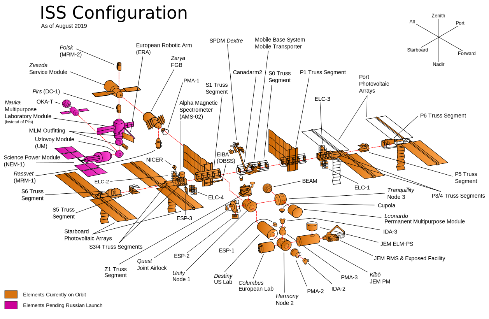

HUBBLE SPACE TOUR
ROVER

ROVER
The International Space Station (ISS) is a modular space station (habitable artificial satellite) in low Earth orbit. The station serves as a microgravity and space environment research laboratory in which scientific research is conducted in astrobiology, astronomy, meteorology, physics, and other fields. The ISS is suited for testing the spacecraft systems and equipment required for possible future long-duration missions to the Moon and Mars.

The International Space Station is the biggest object ever flown in space. It travels around the Earth at an average speed of 27,700 km/h, completing 16 orbits per day. At night it can easily be seen from Earth, as it flies 320 kilometres above us. 16 countries, including the USA, Russia, Japan, Canada and many ESA member states worked together to build the Station.
The largest part of the ISS is a central truss to which 16 huge solar panels are attached. The modules where the astronauts live and work are attached to the centre of the truss. Europe’s biggest ISS project is the Columbus science laboratory, where astronauts can carry out scientific experiments in weightless conditions. Many different types of experiments can take place both inside and outside this space laboratory.
ESA also makes the Automated Transfer Vehicle (ATV), a series of uncrewed spacecraft designed to take supplies to the ISS. The cargo craft delivers food, fuel, equipment and other supplies.